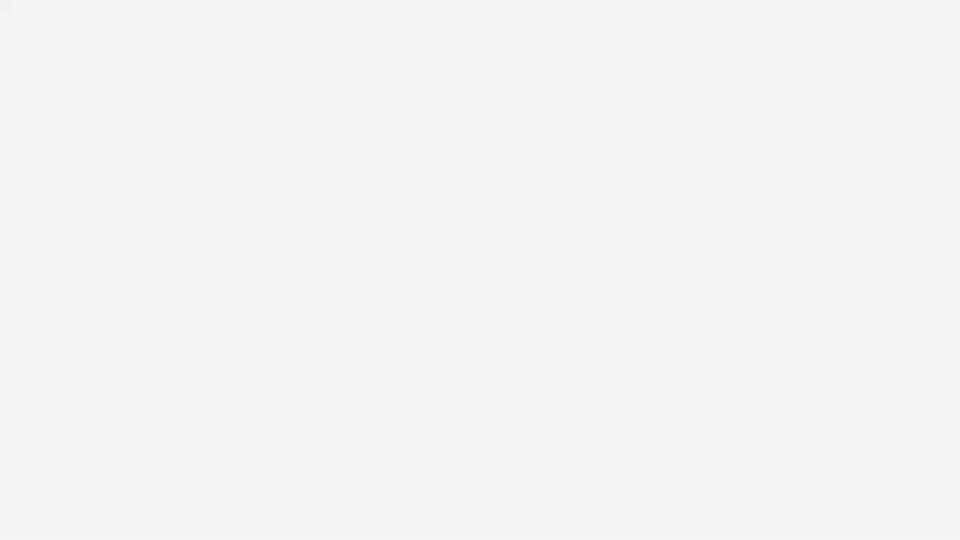

Turn browser review comments on AI-generated HTML into agent context.
Claude Code / Codex / Cursor のワークフローに、人間レビューのループを。
MIT License · localhost-first · アカウント登録不要

bagel push spec.html でレビューURLを発行。bagel share でリモートの相手にも共有。
要素クリックやテキスト選択でコメント。「Fix instruction」でAIへの修正指示として区別。
bagel pull → context.md をエージェントに渡すだけ。修正後の再pushでコメントは自動で追従（Anchor Rebase）。
OSS版は localhost + 一時トンネルで動きます。Team版（ホスト版）では、チームでの継続的なレビュー運用に必要なものを提供予定です：
登録は30秒。準備ができ次第、優先的にご案内します。